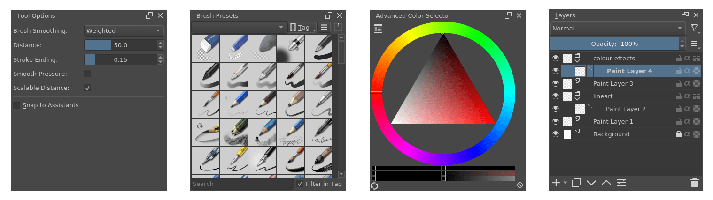
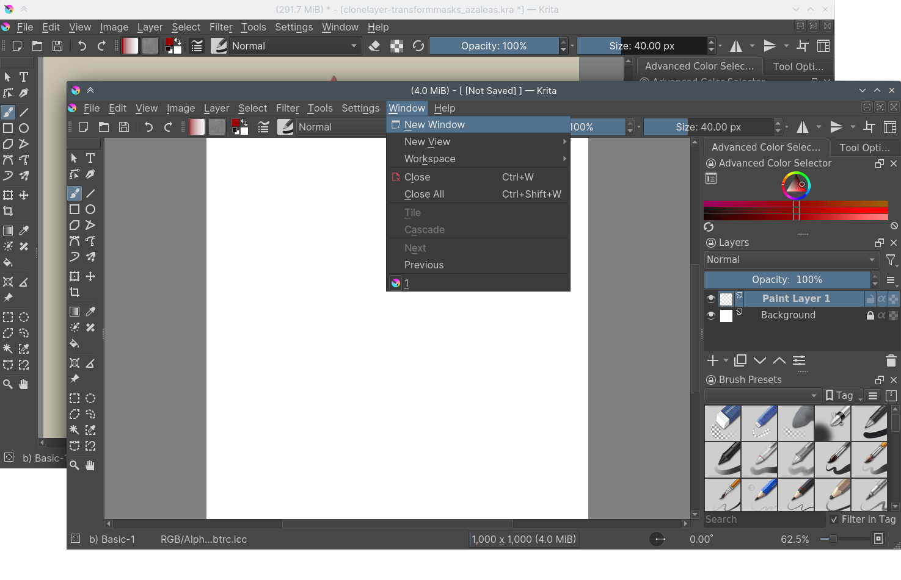
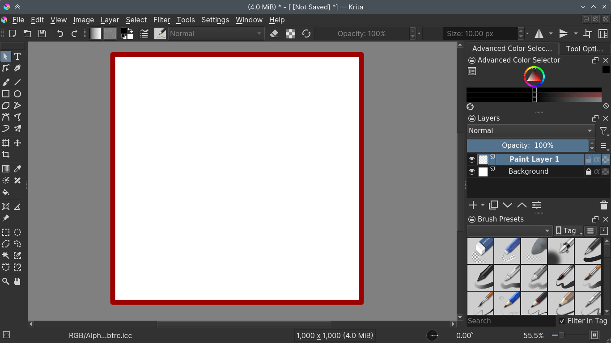
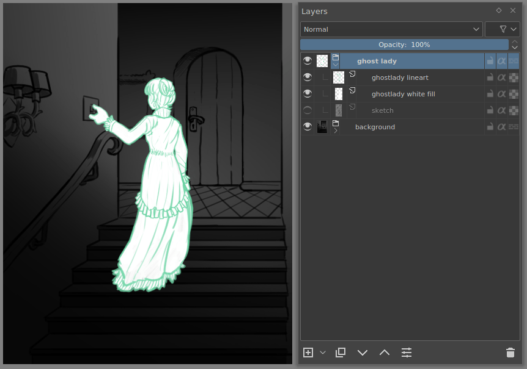
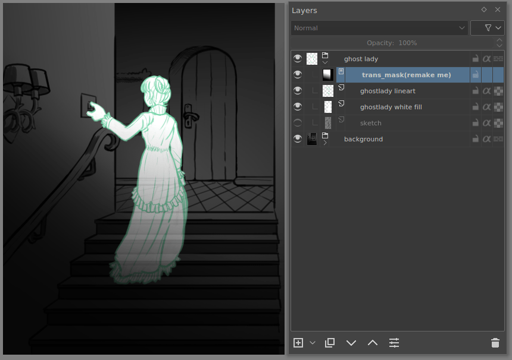
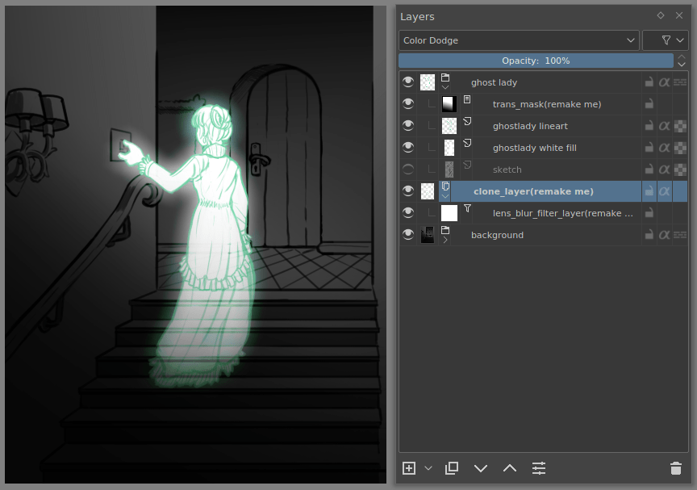
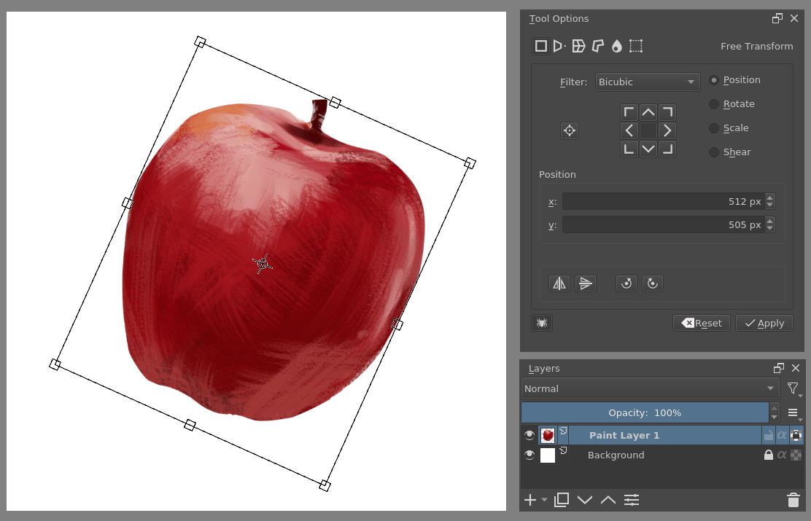

基本概念¶
If this is your first foray into digital painting, this page should give you a brief introduction to the basic but important concepts required for getting started with digital painting in Krita.
Although very lengthy, this page tries to give a brief overview of some of the Krita's most important functionality; it tries to help you grasp the functions of various menu and buttons in Krita without going into minute details.
目錄
點陣與向量¶
Even though Krita is regarded primarily a raster based application, it has some vector editing capabilities as well. If you are new to digital painting medium, it is necessary that you first get yourself acquainted with the concepts of raster and Vector based images.
In digital imaging, a pixel (Picture Element) is a basic and lowest element of an Image. It is basically a grid of points each displaying specific color. Raster editing is manipulating and editing these pixels. For example when you take a 1-pixel brush which is colored black and painting on the white canvas in Krita you are actually changing the color of the pixel beneath your brush from white to black. When you zoom in and see a brush stroke you can notice many small squares with colors, these are pixels:
In contrast to raster images, vector graphic images are based on mathematical expressions. They are independent of the pixels. For example, when you draw a rectangle on a vector layer in Krita you are actually drawing paths passing through points that are called nodes, which are located on specific coordinates on the 'x' and 'y' axes. When you re-size or move these points the computer calculates and redraws the path and displays the newly formed shape to you. Hence, you can re-size the vector shape to any extent without any loss in quality. In Krita, everything which is not on a vector layer is raster based.
影像、檢視與視窗¶
In a painting program, there are three major containers that make up your work-space.
影像¶
The most important one is the Image.
This is an individual copy of the image that you can open or create via the file dialog. Krita allows you to open the file as a new copy via the File menu, or to save it as a new file, or make an incremental copy.
An image contains data regarding layers, color space of image and layers, canvas size and metadata such as creator, date created and DPI et cetera. Krita can open multiple images at once, you can switch between them via the Window menu.
Because the image is a working copy of the image on the hard drive, you can do a lot of little saving tricks with it:
- New
Makes a new image. When you press , you make a new file on the hard drive.
- Open...
Makes an internal copy of an existing image. When you press , you will overwrite the original existing image with your working copy.
- Open existing Document as Untitled Document...
Similar to , however, will request you to specify a saving location: you're making a new copy. This is similar to in other programs.
- Create Copy From Current Image
Similar to but with the currently selected image.
- Save Incremental Version
Allows you to quickly make a snapshot of the current image by making a new file with a version number added to it.
These options are great for people doing production work, who need to switch between files quickly or have backup files in case they do something extreme. Krita also has a file backup system in the form of auto-saves, backup files and crash recovery. You can configure the option for these features in the general settings.
You view the image via a View.
檢視¶
A view is a window onto your image. Krita allows you to have multiple views, and you can manipulate the view to zoom, rotate and mirror and modify the color of the way you see an image without editing the image itself. This is very useful for artists, as changing the way they view the image is a common way to diagnose some common mistakes, like a drawing which is skewed towards one side. Mirroring with the M key makes such skewing easy to identify.
If you have trouble drawing certain curves you will enjoy using rotation for drawing, and of course, there is zooming in and out for precision and rough work.
Multiple views of the same image in Krita¶
Multiple views are possible in Krita via . You can switch between them via the Window menu, or the Ctrl + Tab shortcut, or keep them in the same area when subwindow mode is active in the settings, via .
工具面板¶
Dockers are little subwindows in Krita's interface. They contain useful tools, like the color selector, layer stack, tool options, et cetera.
The image above shows some dockers in Krita.
All the views and the dockers are held inside Windows.
視窗¶
If you've used a computer before, you know what windows are: They are big containers for your computer programs.
Krita allows you to have multiple windows via . You can then drag this to another monitor for multi-monitor use.
The image below shows an example of multiple windows in Krita.
Krita 的畫布¶
When you create a new document in Krita for the first time you will see a rectangular white area. This is called a canvas. You can see it in the image below. The area marked by a red rectangle is a canvas.
When you save the painting as JPG, PNG et cetera or take a print out of the painting, only the content inside this area is taken into consideration. Anything beyond it is ignored. Krita does store information beyond this area, you just won't be able to see it. This data is stored in the Layers.
圖層與合成¶
Like a landscape painter will first paint the sky and then the furthest away elements before slowly working his way to the foreground elements, computers will do the same with all the things you tell them to draw. So, if you tell them to draw a circle after a square on the same spot, the circle will always be drawn later. This is called the Drawing Order.
The layer stack is a way for you to separate elements of a drawing and manipulate the drawing order by showing you which layers are drawn when and allowing you to change the order they are drawn in and also apply all sorts of other effects. This is called Compositing.
This allows you to have line art above the colors, or trees before the mountains, and edit each without affecting the other.
Krita has many layer-types, each layer type is unique and has its own use case:
- 顏料塗層
These are raster layers, and the most common and default layer type in Krita, you will be painting on these.
- 向量圖層
This is a layer type on which you draw vector graphics. Vector graphics are typically more simple than raster graphics and with the benefit that you can deform them with less blurriness.
- 群組圖層
These allow you to group several layers via drag and drop, so you can organize, move, apply masks and perform other actions on them together.
- Clone Layers
These are copies of the layer you selected when making them. They get updated automatically when changing the original.
- File Layers
These refer to an existing image outside Krita and update as soon as the outside image updates. Useful for logos and emblems that change a lot.
- 填充圖層
These layers are filled with something that Krita can make up on the fly, like colors or patterns.
- 濾鏡圖層
These layers help us to apply some filters which will affect a composite image made from all the layers beneath them.
You can manipulate the content of the layers with Tools.
工具¶
Tools help you manipulate the image data. The most common one is of course, the freehand brush, which is the default when you open Krita. There are roughly five types of tools in Krita:
- Paint Tools
These are tools for painting on paint layers. They describe shapes, like rectangles, circles and straight lines, but also freehand paths. These shapes then get used by the Brush engines to make shapes and drawing effects.
- Vector Tools
This is the upper row of tools, which are used to edit vectors. Interestingly enough, all paint tools except the freehand brush allow you to draw shapes on the vector layers. The resulting object won't use the brush preset for outline unlike the ones made with paint tools on normal layer.
- Selection Tools
Selections allow you to edit a very specific area of the layer you are working on without affecting the others. The selection tools allow you to draw or modify the current selection. This is like using masking-fluids in traditional painting method, but whereas using masking fluids and film is often messy and delicate, selections are far easier to use.
- Guide Tools
These are tools like grids and assistants.
- Transform Tools
These are tools that allow you to transform your layer or object on the canvas.
All tools can be found in the toolbox, and information about individual tools can be found in the tools section of the manual.
筆刷引擎¶
Brush engines, as mentioned before, take a path and tablet information and add effects to it, making a stroke.
Engine is a term Krita developers use to describe a complex interacting set of code, that is the core for certain functionality and is highly configurable. In short, like the engine of your car drives your car, and the type of engine and its configuration affects how you use your car, the brush engine drives the look and feel of the brush, and different brush engines have different results.
Krita has a LOT of different brush engines, all with different effects.

Left: pixel brush, Center: color smudge brush, Right: sketch brush.¶
For example, the pixel-brush engine is simple and allows you to do most of your basic work, but if you do a lot of painting, the color smudge brush engine might be more useful. Even though it's slower to use than the Pixel Brush engine, its mixing of colors allows you to work faster when you need to blend and mix colors.
If you want something totally different from that, the sketch brush engine helps with making messy lines, and the shape brush engine allows you to make big flats quickly. There are a lot of cool effects inside Krita's brush engines, so try them all out, and be sure to check the chapters on each.
You can configure these effects via the Brush Settings drop-down, which can be quickly accessed via the F5 key. These configurations can then be saved into presets, which you can quickly access with the F6 key or the Brush Presets docker.
Brushes draw with colors, but how do computers understand colors?
色彩¶
Humans can see a few million colors, which are combinations of electromagnetic waves (light) bouncing off a surface, where the surface absorbs some of it.

Subtractive CMY colors on the left and additive RGB colors on the right. This difference means that printers benefit from color conversion before printing.¶
When painting traditionally, we use pigments which also absorb the right light-waves for the color we want it to have, but the more pigments you combine, the more light is absorbed, leading to a kind of murky black. This is why we call the mixing of paints subtractive, as it subtracts light the more pigments you put together. Because of that, in traditional pigment mixing, our most efficient primaries are three fairly light colors: Cyan blue and Magenta red and Yellow (CMY).
A computer also uses three primaries and uses a specific amount of each primary in a color as the way it stores color. However, a computer is a screen that emits light. So it makes more light, which means it needs to do additive mixing, where adding more and more colored lights result in white. This is why the three most efficient primaries, as used by computers are Red, Green and Blue (RGB).
Per pixel, a computer then stores the value of each of these primaries, with the maximum depending on the bit-depth. These are called the components or channels depending on whom you talk to.

This is the red-channel of an image of a red rose. As you can see, the petals are white here, indicating that those areas contain full red. The leaves are much darker, indicating a lack of red, which is to be expected, as they are green.¶
Though by default computers use RGB, they can also convert to CMYK (the subtractive model), or a perceptual model like LAB. In all cases this is just a different way of indicating how the colors relate to each other, and each time it usually has 3 components. The exception here is grayscale, because the computer only needs to remember how white a color is. This is why grayscale is more efficient memory-wise.
In fact, if you look at each channel separately, they also look like grayscale images, but instead white just means how much Red, Green or Blue there is.
Krita has a very complex color management system, which you can read more about here.
透明度¶
Just like Red, Green and Blue, the computer can also store how transparent a pixel is. This is important for compositing as mentioned before. After all, there's no point in having multiple layers if you can't have transparency.
Transparency is stored in the same way as colors, meaning that it's also a channel. We usually call this channel the alpha channel or alpha for short. The reason behind this is that the letter 'α' is used to represent it in programming.
Some older programs don't always have transparency by default. Krita is the opposite: it doesn't understand images that don't track transparency, and will always add a transparency channel to images. When a given pixel is completely transparent on all layers, Krita will instead show a checkerboard pattern, like the rose image shown above.
混色模式¶
Because colors are stored as numbers you can do math with them. We call this Blending Modes or Compositing Modes.
Blending modes can be done per layer or per brush stroke, and thus are also part of the compositing of layers.
- Multiply
A commonly used blending mode is for example which multiplies the components, leading to darker colors. This allows you to simulate the subtractive mixing, and thus makes painting shadows much easier.
- Addition
Another common one is , which adds one layer's components to the other, making it perfect for special glow effects.
- Erasing
is a blending mode in Krita. There is no eraser tool, but you can toggle on the brush quickly with the E key to become an eraser. You can also use it on layers. Unlike the other blending modes, this one only affects the alpha channel, making things more transparent.
- Normal
The blend mode just averages between colors depending on how transparent the topmost color is.
Krita has 76 blending modes, each doing slightly different things. Head over to the 混色模式 to learn more.
Because we can see channels as grayscale images, we can convert grayscale images into channels. Like for example, we can use a grayscale image for the transparency. We call these Masks.
遮罩¶
Masks are a type of sub-effect applied to a layer, usually driven by a grayscale image.
The primary types of mask are 透明度遮罩, which allow you to use a grayscale image to determine transparency, where black makes everything transparent and white makes the pixel fully opaque.
You can paint on masks with any of the brushes, or convert a normal paint-layer to a mask. The big benefit of masks is that you can make things transparent without removing the underlying pixels. Furthermore, you can use masks to reveal or hide a whole group layer at once!
For example, we have a white ghost lady here:
But you can't really tell whether she's a ghost lady or just really really white. If only we could give the idea that she floats. We right-click the layer and add a transparency mask. Then, we select that mask and draw with a black and white linear gradient so that the black is below.
Wherever the black is, there the lady now becomes transparent, turning her into a real ghost!
The name mask comes from traditional masking fluid and film. You may recall the earlier comparison of selections to traditional masking fluid. Selections too are stored internally as grayscale images, and you can save them as a local selection which is kind of like a mask, or convert them to a transparency mask.
濾鏡¶
We mentioned earlier that you can do math with colors. But you can also do math with pixels, or groups of pixels or whole layers. In fact, you can make Krita do all sorts of little operations on layers. We call these operations Filters.
Examples of such operations are:
- Desaturate
This makes all the pixels turn gray.
- Blur
This averages the pixels with their neighbors, which removes sharp contrasts and makes the whole image look blurry.
- Sharpen
This increases the contrast between pixels that had a pretty high contrast to begin with.
- Color to Alpha
A popular filter which makes all of the chosen color transparent.

Different filter brushes being used on different parts of the image.¶
Krita has many more filters available: you can read about them here.
Filter Brush Engine¶
Because many of these operations are per pixel, Krita allows you to use the filter as part of the 濾鏡筆刷工具.
In most image manipulation software, these are separate tools, but Krita has it as a brush engine, allowing much more customization than usual.
This means you can make a brush that desaturates pixels, or a brush that changes the hue of the pixels underneath.
濾鏡圖層、濾鏡遮罩與圖層樣式¶
Krita also allows you to let the Filters be part of the layer stack, via 濾鏡圖層 and 濾鏡遮罩. Filter Layers affect all the layers underneath it in the same hierarchy. Transparency and transparency masks on Filter Layers affect where the layer is applied.
Masks, on the other hand, can affect one single layer and are driven by a grayscale image. They will also affect all layers in a group, much like a transparency mask.
We can use these filters to make our ghost lady look even more ethereal, by selecting the ghost lady's layer, and then creating a clone layer. We then right-click and add a filter mask and use Gaussian blur set to 10 or so pixels. The clone layer is then put behind the original layer, and set to the blending mode 'Color Dodge', giving her a definite spooky glow. You can keep on painting on the original layer and everything will get updated automatically!
Layer Effects or Layer Styles are filter masks popularized by Photoshop's that are a little faster than regular masks, but not as versatile. They are available by right-clicking a layer and selecting 'layer style'.
變形¶
Transformations are kind of like filters, in that these are operations done on the pixels of an image. We have a regular image and layer wide transformations in the image and layer top menus, so that you may resize, flip and rotate the whole image.
We also have the Crop Tool, which only affects the canvas size, and the 移動工具 which only moves a given layer. However, if you want more control, Krita offers a Transform Tool.
With this tool you can rotate and resize on the canvas, or put it in perspective. Or you can use advanced transform tools, like the warp, cage and liquify, which allow you to transform by drawing custom points or even by pretending it's a transforming brush.
Deform Brush Engine¶
Like the filter brush engine, Krita also has a Deform Brush Engine, which allows you to transform with a brush. This deform is like a much faster version of the Liquefy transform tool mode, but in exchange, its results are of much lower quality.
Apple transformed into a pear with liquefy on the left and Deform brush on the right.¶
Furthermore, you can't apply the deform brush as a non-destructive mask.
Transform Masks¶
Like filters, transforms can be applied as a non-destructive operation that is part of the layer stack. Unlike filter and transparency masks however, 變形遮罩 can't be driven by a grayscale image, for technical reasons. You can use transform masks to deform clone and file layers as well.
Animation¶

From version 3.0 onwards, Krita got raster animation support. You can use the timeline, animation and onionskin dockers, plus Krita's amazing variety of brushes to do raster based animations, export those, and then turn them into movies or GIFs.
輔助尺、網格與參考線¶
With all this technical stuff, you might forget that Krita is a painting program. Like how when working with traditional medium, as an illustrator, you can have all sorts of equipment to make drawing easier, Krita also offers a variety of tools:

Krita's vanishing point assistants in action.¶
- Grids and Guides Docker
A very straightforward guiding tool which shows grids or guiding lines that can be configured.
- 吸附
You can snap to all sorts of things. Grids, guides, extensions, orthogonals, image centers and bounding boxes.
- 使用輔助尺來繪畫
Because you can hardly put a ruler against your tablet to help you draw, the assistants are there to help you draw concentric circles, perspectives, parallel lines and other easily forgotten but tricky to draw details. Krita allows you to snap to these via the tool options as well.
These guides are saved into Krita's native format, which means you can pick up your work easily afterward.
自訂介面¶
This leads to the final concept: customization.
In addition to rearranging the dockers according to your preferences, Krita provides and saves your configurations as Workspaces. This is the button at the top right.
You can also configure the toolbar via , as well as the shortcuts under both and .